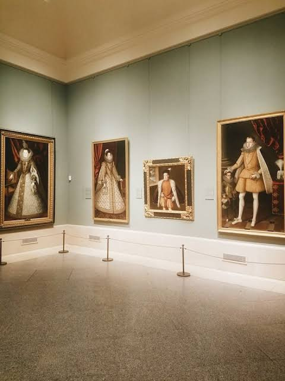

Teljes árú belépő: 15 € - tartalmazza az állandó gyűjtemény megtekintését-.
Belépő + útikönyv: 24 € - tartalmazza a hivatalos, 478 oldalas Prado útikönyvet.
Kedvezményes belépő: 7,50 € - 65 év feletti látogatóknak, a diákigazolvánnyal rendelkező fiataloknak és a nagycsaládosoknak (a pénztárnál igazolni kell a jogosultságot).
Ingyenes belépés: Ingyenes a 18 év alatti gyermekek, a 25 év alatti diákok és a megfelelő dokumentummal rendelkező álláskeresők számára.
Ingyenes napi nyitvatartás
Hétfőtől szombatig: 18:00–20:00
Vasárnap és ünnepnapokon: 17:00–19:00
Megjegyzés: Az ingyenes időszakban csak az állandó kiállítás látogatható, és előfordulhat, hogy már korábban sor alakul ki.

vissza